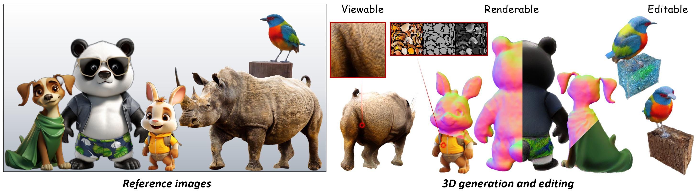
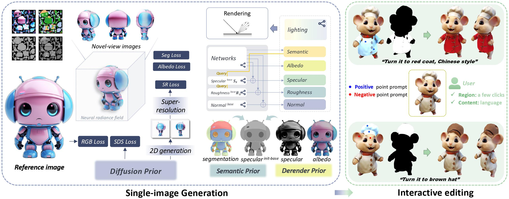

HyperDreamer: Hyper-Realistic 3D Content Generation
and Editing from a Single Image
SIGGRAPH Asia 2023 (Conference Track)
Tong Wu1,2*, Zhibing Li1,2*, Shuai Yang1,3*, Pan Zhang1, Xingang Pan4, Jiaqi Wang1, Dahua Lin1,2✉, Ziwei Liu4✉
1 Shanghai AI Laboratory, 2 The Chinese University of Hong Kong, 3 Shanghai Jiao Tong University, 4 S-Lab, NTU
Abstract

3D content creation from a single image is a long-standing yet highly desirable task. Recent advances introduce 2D diffusion priors, yielding reasonable results. However, existing methods are not hyper-realistic enough for post-generation usage, as users cannot view, render and edit the resulting 3D content from a full range. To address these challenges, we introduce HyperDreamer with several key designs and appealing properties: 1) Viewable: 360° mesh modeling with high-resolution textures enables the creation of visually compelling 3D models from a full range of observation points. 2) Renderable: Fine-grained semantic segmentation and data-driven priors are incorporated as guidance to learn reasonable albedo, roughness, and specular properties of the materials, enabling semantic-aware arbitrary material estimation. 3) Editable: For a generated model or their own data, users can interactively select any region via a few clicks and efficiently edit the texture with text-based guidance. Extensive experiments demonstrate the effectiveness of HyperDreamer in modeling region-aware materials with high-resolution textures and enabling user-friendly editing. We believe that HyperDreamer holds promise for advancing 3D content creation and finding applications in various domains.
Video
Method Overview
Overview of our 3D generation and editing pipeline. We introduce diffusion priors, semantic priors, and derendering priors into this highly under-constraint problem to enable high-resolution textures with material modeling and interactive editing after the generation.
Single-Image Generation
Relighting
Interactive Editing
For a generated model or their own data, users can interactively select any region via a few clicks and efficiently edit the texture with text-based guidance.
Citation
@InProceedings{wu2023hyperdreamer,
author = {Tong Wu, Zhibing Li, Shuai Yang, Pan Zhang, Xingang Pan, Jiaqi Wang, Dahua Lin, Ziwei Liu},
title = {HyperDreamer: Hyper-Realistic 3D Content Generation and Editing from a Single Image},
journal={ACM SIGGRAPH Asia 2023 Conference Proceedings},
year={2023}
}